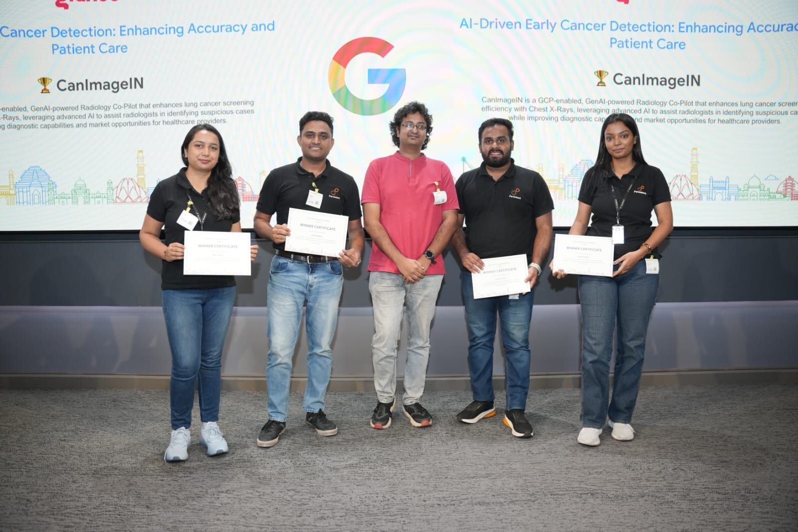
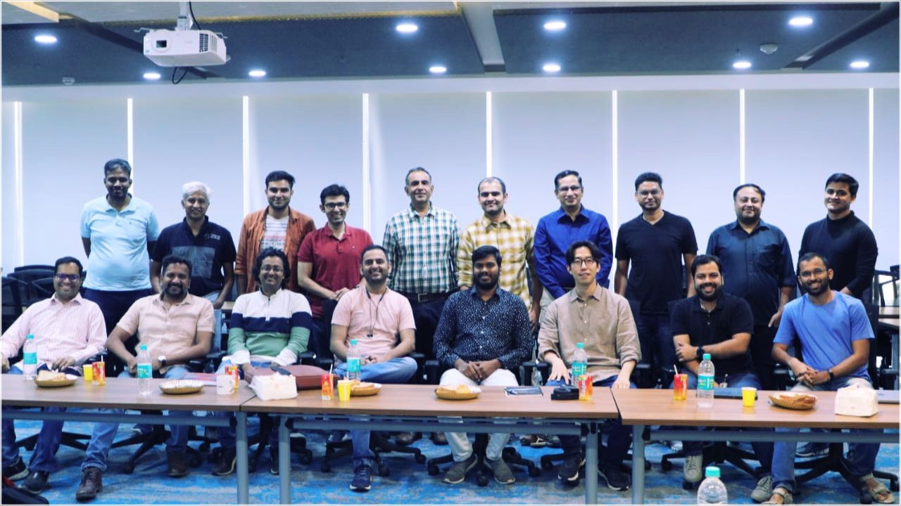
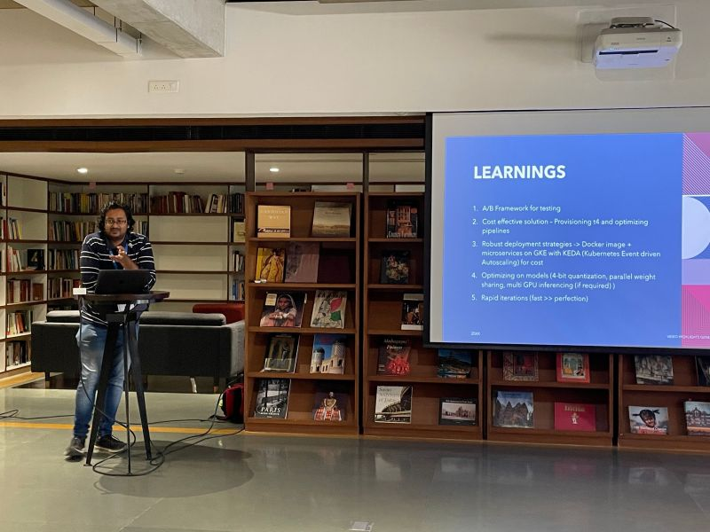

Image Carousel Gallery




I work as Tech Lead, Machine Learning at Glance InMobi Group.
I lead a team of 10+ engineers and work on building products using Deep Learning and Computer Vision in two broad domains - Recommendation Systems and Generative AI.
Prior to this, I worked at Societe Generale as Software Engineer, designing APIs for Datalake to store financial deals made by the company, historize the financial deals to run ML models.
I received my Bachelors Degree from the Department of Electrical Engineering, Indian Institute of Technology, Kharagpur
Email: I can be reached at : akshat |dot| ag1097 |at| gmail |dot| com, or akshat |dot| gupta [at] inmobi [dot] com
Please refer to my CV and my Research Profile and Kaggle Profile for details. Please contact me for access to any of my publications behind a paywall

Develop an AI-powered solution that can accurately detect cancer at an early stage using [specific data type, e.g. medical images, genomic data, electronic health records]. The solution should be able to identify high-risk patients and alert healthcare providers for further screening and classify cancer types and stages with high accuracy. The goal is to improve cancer detection rates and enhance patient outcomes through early intervention

Using SOTA Image Superresolution, the problem statement was how to increase the quality of images while reducing image size. In other words, we want a solution which improves the image quality (sharpness, contrast, etc.) and simultaneously reducing the final size of the image, so that it improves the user experience both ways, and also reduce the cost for storing images
1.Faster Whisper using CTranslate2 for audio transcription.
2.BLIP and Git for Image Captioning.
3.Vilt for Visual Question Answering.
4.Color Histograms for Shot boundary detection.
5.gpt3.5-turbo for text highlights and summarisation.
6.Sentence-BERT embedding and cosine similarity for retrieval.
To increase engagement on a live streaming platform, the goal is to identify the most engaging segments from videos, especially since a large number of users drop off within the first 30 seconds. Given the short attention spans of users, particularly Gen Z, the platform aims to enhance the appeal of videos trailers, and mashups. The solution involves both segment identification and the addition of external features to hook users early. A customizable framework will be developed to handle various content types and boost user retention.
Example results for the respective modalities - blue (predicted segmentation maps) and red (ground truth). Top 4 rows are for core-segmentation, while bottom 2 rows are for core + penumbra segmentation [paper]

Example results. (a) NCCT slices; (b) right (red) and left (green) hemispheres as predicted by U-Net classifier, (c) pdML (red) and odML (green) curves, (d) iML (cyan) and odML (green) curves, and (e) iML (cyan) and pdML (red) curves superimposed on NCCT slices. In this study, a convolutional neural network (CNN) was used to predict the deformed left and right hemispheres. The proposed algorithm was validated with non-contrast computed tomography (NCCT) of (n = 45) subjects with two types of brain hemorrhages - epidural hemorrhage (EDH): (n = 5) and intra-parenchymal hemorrhage (IPH): (n = 40) [paper]

A novel multi-path convolution derived attention making different weighted filters in each attention convolution sub-path, with interactions on the same level of abstraction. This facilitates the network to focus on voxels with enhanced weighted activations, directing to a plausible lesion. Such a proposition of acquiring attention by embedding multiple filter paths, also prioritizes the selective activation of multi-parametric MRI sequences. The multi-path convolution assisted attention block allows the network layers to gain more insights on the input tensor, enabling the expansion of hypothesis search space with a controlled parameter count.[paper]
Implemented a custom CNN computation engine that took 7 tiled input arrays from CPU branching to 2 kernels, fetched 7 input weights from FPGA DRAM, and calculated the weighted sum. The engine was implemented on Xilinx Vertex -7 chip using MaxCompiler and Verilog software. The clock frequency for the computation engine was around 103MHz in MaxCompiler as compared to 106MHz in Verilog. [slides]
{kind=link}
{kind=link}